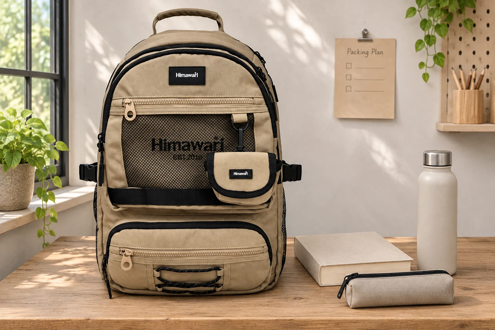
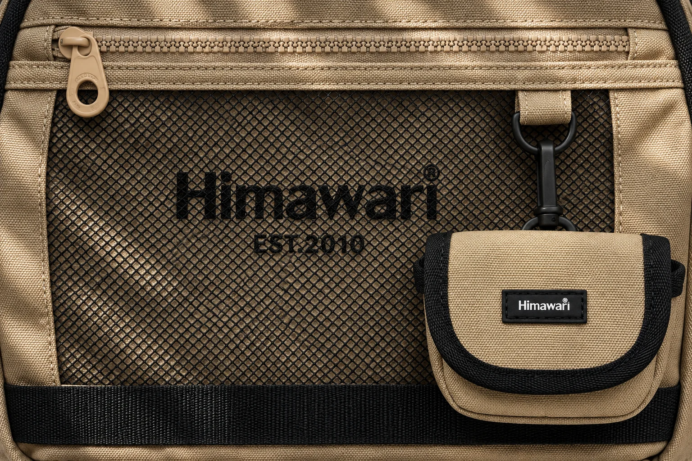
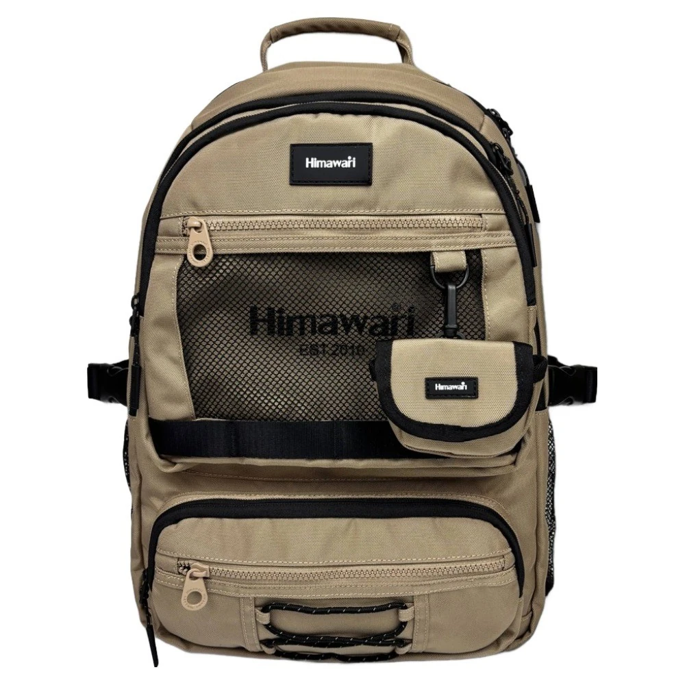

빈 백팩 무게에 평소 짐을 더하면 몇 그램일까

같은 크기로 보이는 백팩 둘을 놓고 빈 가방 무게만 비교하면 어느 쪽이 가벼운지 금방 알 수 있습니다. 그런데 실제로 가방을 드는 시간은 거의 모두 짐을 넣은 뒤입니다. 제품 무게는 후보를 고를 때 참고할 만합니다. 매일 들 무게를 보려면 그 값에 짐 무게를 더합니다. 평소 들고 다니는 짐을 가볍게 챙기는 날과 많이 넣는 날로 나눠 보면, 가방끼리의 차이가 내 짐에서 어느 정도인지 알기 쉽습니다.
여기서는 No.9291 베이지를 예로 듭니다. 공개 제품 정보에는 본체 무게 1100g과 외부 크기 가로 31 × 세로 45 × 폭 15cm가 적혀 있습니다. 계산에 쓰는 짐 무게는 예시입니다. 사진 속 책이나 병의 무게를 재거나 가방에 넣어 본 값은 아닙니다. 자기 가방을 고를 때에는 이 예시의 숫자를 그대로 옮기기보다 실제로 들고 다니는 물건의 무게를 써 보세요.
계산 하나. 가방이 다르고 짐이 같을 때
평소 짐이 1300g이라고 가정합니다. No.9291의 공개 무게 1100g을 더하면 2400g입니다. 비교하는 다른 가방의 공개 무게가 800g이라면 같은 짐을 더한 값은 2100g입니다. 두 가방의 차이는 300g입니다. 빈 가방끼리 비교했을 때와 같지요. 같은 물건을 담을 때에는 처음 제품표에서 본 무게 차이가 출발할 때도 그대로 남습니다.
그 차이가 얼마나 크게 느껴지는지는 이동 방식에 따라 달라집니다. 아침에 버스에 한 번 타고 자리에서 가방을 내려놓는 사람과 환승할 때마다 오래 걸으며 계속 메는 사람은 같은 차이를 다르게 느낄 수 있습니다. 평소 300g쯤 나가는 물건을 이미 갖고 있다면 비교할 때 손에 따로 들어 볼 수 있습니다. 그 물건을 잠깐 들었을 때의 느낌을 가방 전체의 착용감으로 판단하지는 마세요. 같은 숫자라도 등에서 가방이 닿는 위치와 끈이 놓인 자리에 따라 느끼는 바가 달라집니다.
이때 겉에 붙은 부속품도 같이 확인합니다. No.9291 베이지의 공개 사진에는 앞쪽 검은 망 옆에 작은 베이지색 파우치가 걸려 있습니다. 공개 무게 1100g에 사진 속 모든 부속품이 포함됐는지는 표에서 확인하기 어렵습니다. 가방 두 개를 직접 비교할 수 있다면 각각 쓸 부속품을 단 상태로 잽니다. 부속품을 빼고 쓸 예정이라면 그 조건도 적어 두세요. 공개 수치로 먼저 후보를 고른다면 부속품 포함 여부가 다른 수치끼리 몇십 그램 차이만 보고 순서를 정하지 않는 편이 낫습니다.

계산 둘. 가방은 같고 짐이 늘어나는 날
같은 No.9291을 들되 책이나 노트가 더 필요한 날에 짐이 2100g이라고 가정합니다. 합계는 3200g입니다. 평소 2400g과 비교하면 800g 늘어납니다. 이 예에서는 짐이 늘어나는 폭이 가방을 300g 가벼운 것으로 바꿀 때의 차이보다 큽니다. 짐이 많은 날과 적은 날을 한 숫자로 평균 내면 놓치기 쉬운 차이입니다.
짐을 덜어 낼 수 있는지부터 고민할 필요는 없습니다. 매번 필요한 자료라면 그대로 두고 그 무게를 기준으로 가방을 고릅니다. 다만 평소에 비워 둔 채 가져가는 물병과 출근 전에 채우는 물병은 같은 병이어도 이동할 때의 무게가 다릅니다. 아침에는 마시는 물을 들고 가고 돌아오는 길에는 책을 빌리는 사람이라면 오가는 길의 짐을 나누어 적어 봅니다. 집에서 잰 총량과 귀갓길 가방이 달라지는 이유를 알면 어느 구간의 짐을 기준으로 메 볼지 정할 수 있습니다.
짐의 무게가 같아도 가방 앞쪽으로 단단한 물건을 몰아 놓은 날에는 가방이 등 뒤로 당기는 듯할 수 있습니다. 앞의 작은 파우치나 바깥 포켓에 넣기 쉬워 보여도 자주 꺼내는 가벼운 소품이 있는지부터 살펴보세요. 책처럼 묵직한 짐은 두꺼운 물건과 겹치지 않게 놓습니다. 메기 전에 가방 속에서 큰 물건이 옆으로 움직이는지도 확인합니다. 이렇게 짐의 자리를 바꿔도 합계는 같습니다. 두 가방에 같은 짐을 넣어 메 볼 때는 어느 한쪽에만 짐이 쏠리지 않게 놓아 보세요.

실제로 적어 둘 값은 두 줄이면 됩니다
가방을 이미 갖고 있다면 비워 둔 가방의 무게를 먼저 잽니다. 집에 있는 저울이 가방을 받치기에 작으면 무리해서 올리지 않습니다. 물건만 따로 재어 더할 수도 있습니다. 이때 제품 무게는 제품표에서 가져온 값이라고 메모합니다. 가방이 바뀌어도 짐의 목록을 다시 셀 필요가 없도록 가방과 짐 값을 따로 적습니다. 자주 쓰는 파우치가 있다면 내용물과 파우치를 함께 재어 적어 두세요. 끈처럼 작아도 매일 달고 다니는 물건을 빼먹지 않기 좋습니다.
첫 줄에는 보통 날의 짐과 합계, 둘째 줄에는 짐이 늘어나는 날의 항목과 합계를 적습니다. 출근길에 손으로 들어 계단을 오르는 구간이 길다면 그 상황을 옆에 덧붙입니다. 실제로 메 볼 수 있을 때에는 가방을 오래 들 수 있는지 한 번에 가늠하기는 어렵습니다. 걸으면서 어느 쪽 끈을 자꾸 만지게 되는지, 가방을 한 번 내려놓고 싶어지는 곳이 어디인지 살펴보세요. 같은 무게라고 적힌 가방끼리도 그 차이는 시착해야 알 수 있습니다.
빈 무게를 비교할 때 더 가벼운 모델에 눈이 가는 건 자연스럽습니다. 매일 짐이 거의 같다면 그 차이를 구입 기준으로 삼기 쉽습니다. 짐 구성이 자주 바뀐다면 짐이 많은 날의 합계를 먼저 적어 보세요. 그 합계를 적어 두면 가방을 매장에서 들어 볼 때도 기준이 생깁니다. 짐이 많은 날에는 어느 구간에서 오래 메는지부터 생각해 보세요. 그 구간을 걸을 때 끈이 놓이는 자리와 가방을 한 번 내려놓을 수 있는 곳을 함께 보면 됩니다.